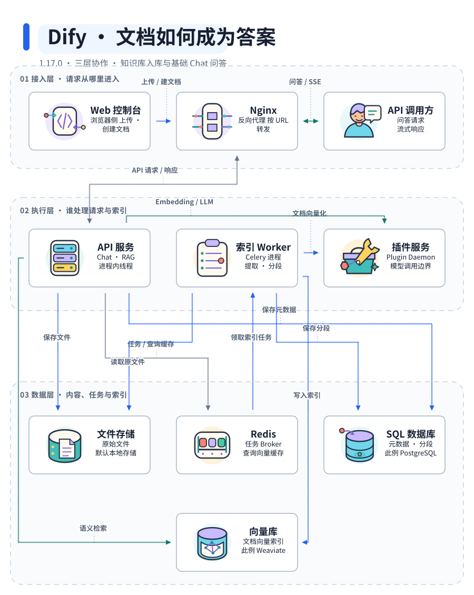

ANIDIAGRAM / SOURCE-BACKED CASE STUDY 源码解读稿 · 待独立复核
从文档到答案，
Dify 的三层如何协作？
上传文件不等于完成知识库索引，在线问答也不一定经过任务队列。
把两条路径放回真实服务与存储边界，看看每一步由谁负责。
文档入库在线问答共享接口
同一份架构与源码证据，仅改变视觉表现。

10 个节点 · 13 条选定关系 · 三个逻辑层，不是三个部署服务。交互图可切换「文档入库 / 在线问答」；窄屏请打开后放大。箭头表示调用或任务交付，非完整时序。
异步的是文档索引，不是这里的全部问答。
本例的基础 CHAT 在 API 进程的新线程中检索知识、组织上下文并调用模型；文档索引则由 Celery Worker 提取、分段、向量化并写入索引。
源码固定：Dify 1.17.0 · 09a855d
这是基于源码阅读的架构试稿。源码引用校验不等于语义准确性证明；独立语义复核待完成，未运行 Dify 或调用真实模型。
这张图画了什么，又没有画什么？
- 范围：自托管、本地文本文件、
high_quality 段落索引，基础 AppMode.CHAT，已配置且选中的内部知识库与语义检索，正常成功路径。
- 三个数据形态：原始文件在文件存储，元数据与分段在 SQL，向量索引在向量库。PostgreSQL / Weaviate 是此例选择，并非唯一支持的存储。
- 图中 Worker 是独立 Celery 进程；API 内部的 Chat / RAG 代码不是额外的微服务。
- 查询 Embedding 命中 Redis 缓存时不再调用 Embedding 模型。知识库路由也可能先调用 LLM，所以图中连线不是严格的执行顺序。
- 只追踪到 Plugin Daemon 的 HTTP 接口；未审阅其独立仓库和具体模型插件，不画成已验证的外部模型调用链。
- 不包含 Workflow、Chatflow、Agent、知识流水线、多模态、重排、错误重试、Web 服务端托管及全部数据库/缓存访问。
把这个案例交给其他 Agent 复核
用 AniDiagram 分析 langgenius/dify 的固定提交
09a855dcef24c0edc7431c46c0cfaa494481daf5（1.17.0）。
核对本地文本文件的 high_quality paragraph 索引，以及基础 CHAT
在已选中内部知识库时的 semantic_search 与回答生成。
检查：文档何时提交与投递任务？Chat 的工作线程属于哪个进程？
文件、SQL、Redis、向量库分别存什么？Embedding 缓存命中怎样改变模型调用？
分清模块与独立服务；不要把所有问答都画进 Celery 队列。
每条关键边给出固定 SHA 的源码依据。先审计语义，再评价视觉效果。
完整源码索引与构建命令 · 事实检查报告 · 语义 Plan